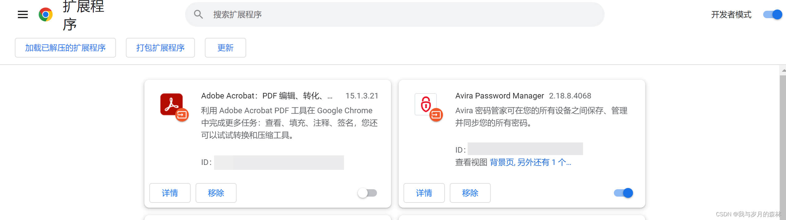
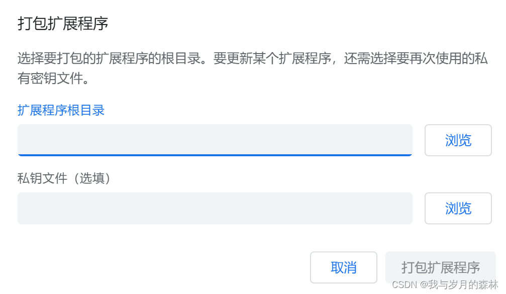
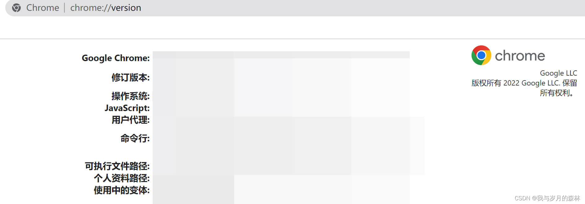
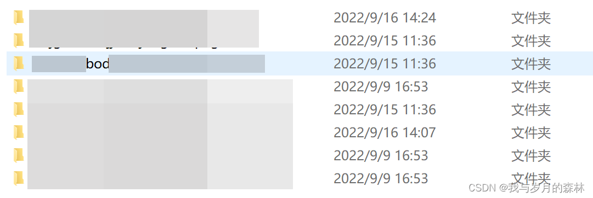
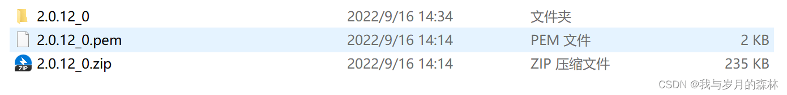
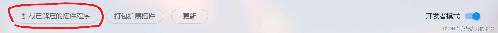
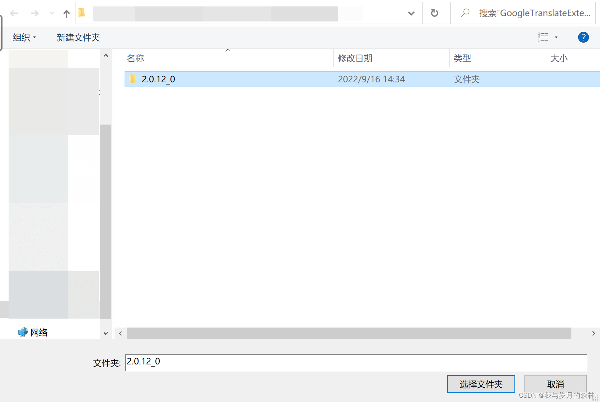
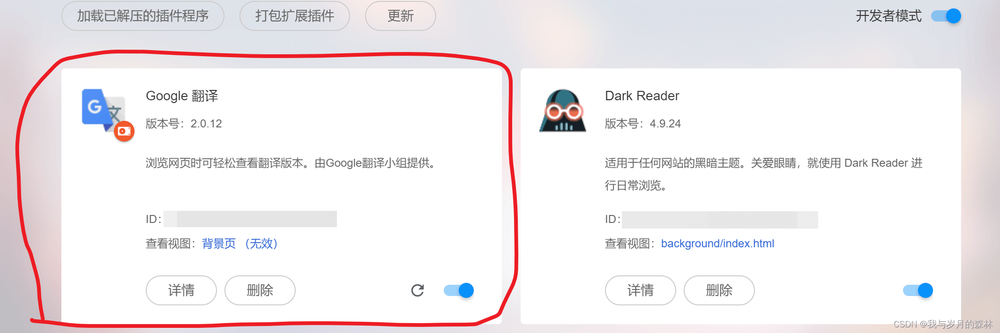

浏览器插件的打包和解压
浏览器插件打包（以Chrome为例）
- 进入扩展程序页面，打开开发者模式，点击打包扩展程序

- 填写插件根目录，如果是更新扩展则需要填写私钥文件路径

- 找到Chrome的插件安装路径，在浏览器地址栏输入chrome://version，个人资料路径下的Extensions则为插件目录

- 根据ID查看对应插件的文件夹，复制好插件的根路径即可


- 打包完成后会生成一个.crx和.pem文件，.crx文件是加载插件的文件而.pem是私钥文件

浏览器插件解压（以某浏览器为例）
- 将.crx文件重命名为.rar或.zip，然后对插件进行解压

- 加载已解压的插件



本博客所有文章除特别声明外，均采用 CC BY-NC-SA 4.0 许可协议。转载请注明来源 我与岁月的森林的博客！
评论